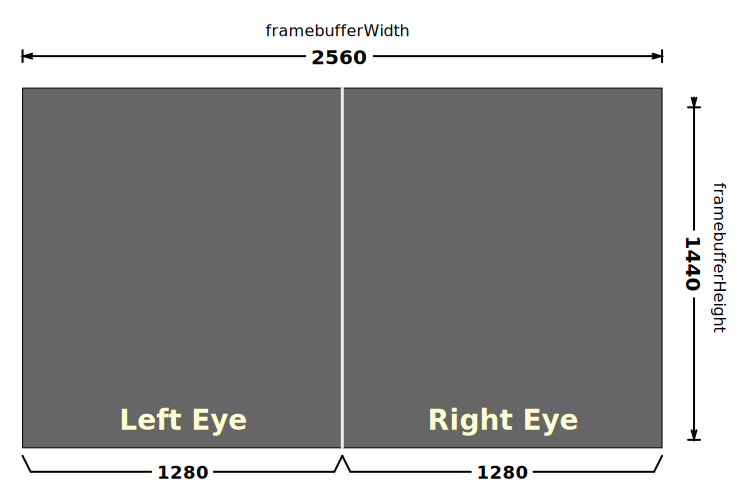

{{securecontext_header}}{{APIRef("WebXR Device API")}}
The static method
XRWebGLLayer.getNativeFramebufferScaleFactor() returns a
floating-point scaling factor by which one can multiply the specified
{{domxref("XRSession")}}'s resolution to get the native resolution of the WebXR
device's frame buffer.
This information can be used when creating a new XRWebGLLayer to configure
the {{domxref("XRWebGLLayerInit")}} property
{{domxref("XRWebGLLayerInit.framebufferScaleFactor", "framebufferScaleFactor")}} in the
options specified when calling the XRWebGLLayer() constructor. See the
{{anch("Usage notes")}} and {{anch("Examples")}} for details.
If the scaling factor is 1.0, then the frame buffer pixels and the native display pixels are the same size. If the scaling factor is greater than zero, then the frame buffer is smaller than the diplay's native dimensions, resulting in the output being up-scaled for display to the screen after rendering into the frame buffer. If the scaling factor is less than zero, the frame buffer is larger than the native resolution of the display, resulting in the frame buffer's contents being scaled down for display to the XR device. This can happen for display environments which use superscaling or anti-aliasing techniques to improve perceived image quality.
let nativeScaling = XRWebGLLayer.getNativeFramebufferScaleFactor(session);
sessionA floating-point value which, when multiplied by the {{domxref("XRSession")}}'s recommended framebuffer dimensions, results in the XR device's native frame buffer resolution. If the session has ended, this function returns 0.0.
The scaling factor returned by this function will be 1.0 if the native resolution of
the XR device and the resolution of the XR device match. In any case, multiplying the
recommended resolution as identified by the XRSession by this value will
result in the actual native resolution of the XR hardware.
The recommended WebGL frame buffer resolution is the best possible estimate of the resolution necessary to contain all of fthe {{domxref("XRView")}}s needed by the device while at the same time providing typical applications an acceptable balance of image quality and performance.
For example, consider a device which uses a 2560x1440 pixel frame buffer (which is used to render two views, for the left and right eyes, side by side each at a resolution of 1280x1440 pixels). Consider a frame buffer which at full size looks like this:

If, on this device, it's determined that due to GPU limitations the browser needs to
reduce image quality in order to improve performance to an acceptable level, it might
choose to halve the resolution. In this case, the value returned by
XRWebGLLayer.getNativeFramebufferScaleFactor() will be 2.0. This method of
dividing the frame buffer between views is shown in the following diagram.
Now the width and height of the frame buffer are 50% what they were before, resulting in a total frame buffer size of 1280 by 720 pixels, with each eye's half of the buffer being 640x720 pixels. Now we can see the coordinates of each of the viewports representing these two views:
Since each eye gets half of the frame buffer, the result is that the left eye gets a
640x720 portion of the buffer with the viewport's x and y at
0, the width at 640, and the height set to 720. The right eye gets the other half of the
frame buffer, with its viewport's x set at 639.
While rendering a frame for this scene, we get the viewport for the view and apply it to WebGL, then render the scene. This ensures that the scene we render will not only match the viewpoint we need to express (which is defined by the position and orientation data in the pose), but that the rendered output will be constrained within the correct portion of the frame buffer for the eye we're drawing, regardless of any scaling that is being performed.
In this example, we request a frame buffer at the device's native resolution, regardless of any performance concerns:
function requestNativeScaleWebGLLayer(gl, xrSession) {
return gl.makeXRCompatible().then(() => {
let scaleFactor = XRWebGLLayer.getNativeFramebufferScaleFactor(xrSession);
let glLayer = new XRWebGLLayer(xrSession, gl, {
framebufferScaleFactor: scaleFactor
});
xrSession.updateRenderState({ baseLayer: glLayer });
});
};
This starts by calling the WebGL
rendering context function {{domxref("WebGLRenderingContext.makeXRCompatible",
"makeXRCompatible()")}}. When the returned {{jsxref("promise")}} resolves, we proceed by
calling XRWebGLLayer's getNativeFramebufferScaleFactor()
static function to get the scale factor needed to reach the native resolution, and we
then pass that into the {{domxref("XRWebGLLayer.XRWebGLLayer", "WebGLLayer()")}}
constructor as the value of the {{domxref("XRWebGLLayerInit.framebufferScaleFactor",
"framebufferScaleFactor")}} property in its layerInit dictionary, which is
an {{domxref("XRWebGLLayerInit")}} object.
That gets us a new {{domxref("XRWebGLLayer")}} object representing a rendering surface
we can use for the {{domxref("XRSession")}}; we set it as the rendering surface for
xrSession by calling its {{domxref("XRSession.updateRenderState",
"updateRenderState()")}} method, passing the new glLayer in using the
{{domxref("XRRenderState")}} dictionary's {{domxref("XRRenderState.baseLayer")}}
property. The result is a rendering context that looks like the diagram below:

Each time the {{domxref("XRViewerPose")}}'s {{domxref("XRViewerPose.views", "views")}} are iterated over for rendering, the rendering loop obtains an {{domxref("XRView")}} for the left eye which has its top-left corner at (0, 0) with its width and height being 1280x1440 pixels. The right eye it obtains has its top-left corner at 1280, 0 with the same width and height: 1280x1440.
| Specification | Status | Comment |
|---|---|---|
| {{SpecName('WebXR','#dom-xrwebgllayer-getnativeframebufferscalefactor','static XRWebGLLayer.getNativeFramebufferScaleFactor()')}} | {{Spec2('WebXR')}} | Initial definition. |
{{Compat}}